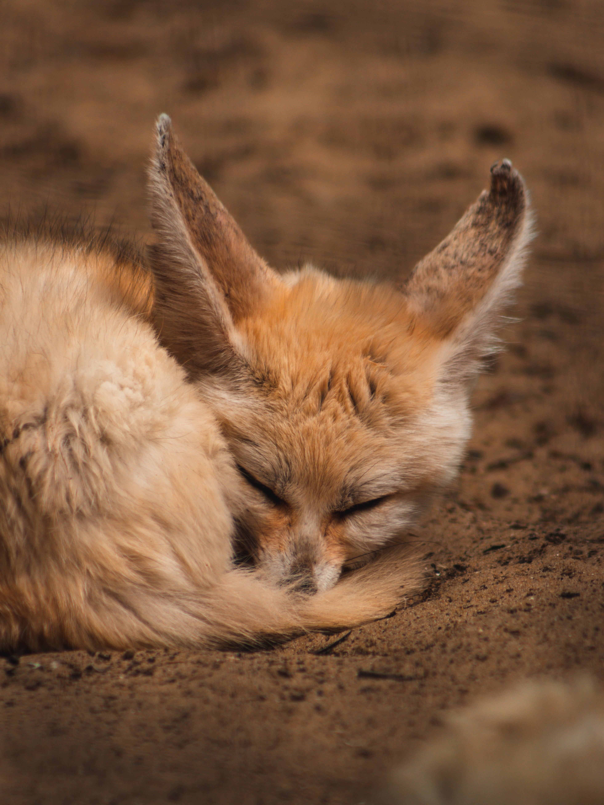

The fennec fox is well adapted to life in the desert. Its feet have soft fur on the soles to protect them from the heat and aid in walking on loose sand. Its large ears function like radiators to disperse heat. The fox can survive without water for extended periods, taking moisture from food and staying below ground during the heat of the day. The fennec fox mates for life and lives in family units of up to ten individuals.


Sounds

Video

Images
"Adopt"

At WWF